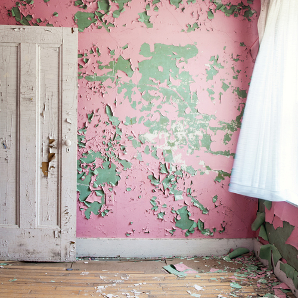
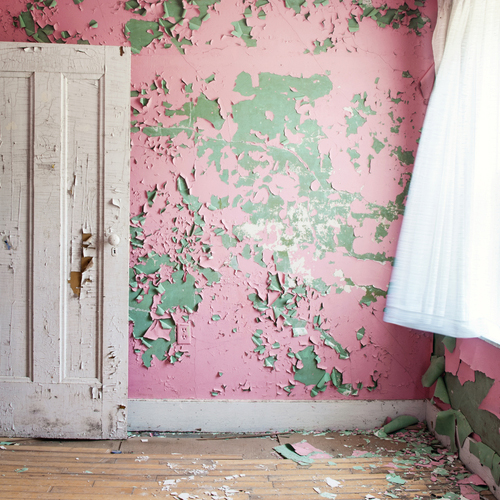
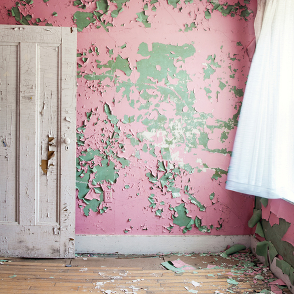
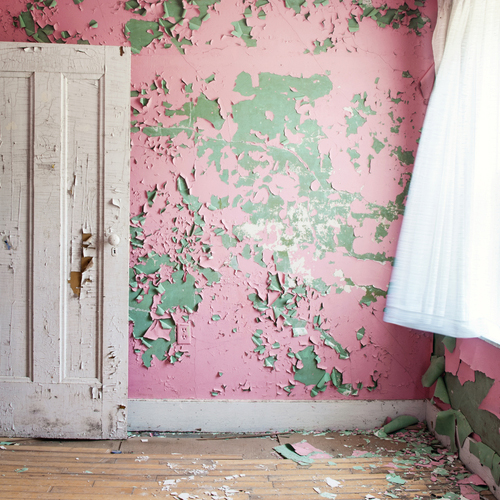
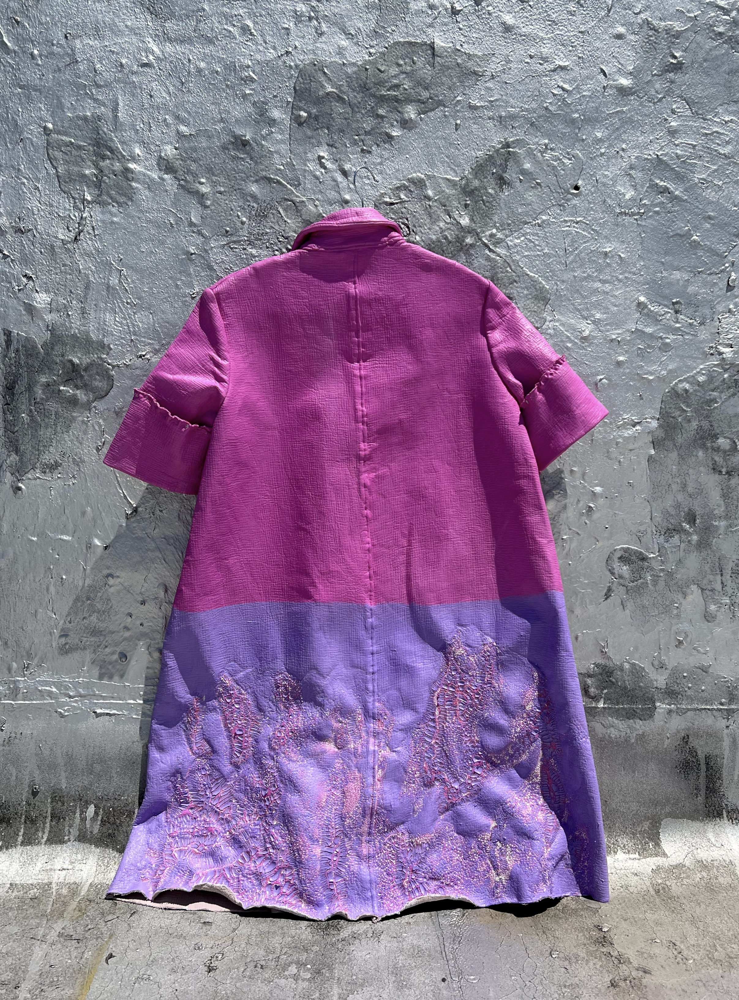
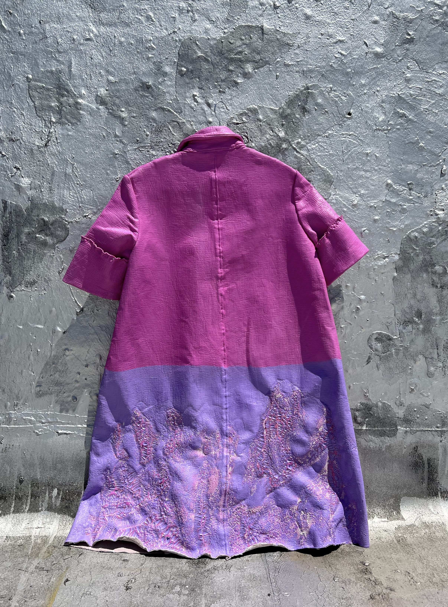

 

Despite a nation wide ban that was enacted 45 years ago lead-based paint maintains a terrifying, often silent, unequal grip on the modern lives of Americans. Researchers and scientists alike have spent centuries studying the harmful effects of lead-based paint exposure. Despite this research, the government has failed to provide adequate assistance to get rid of lead paint from the walls of homes. So while we may not be seeing advertisements for paint filled with lead, our City's children of today, and adults of tomorrow still face the lasting weight of health and developmental delays caused by chipped lead-based paint.
The goal of this project is to explore how we can use fashion to re-visualize important data.
Using fashion as data vidsualization brings the exerience of interpretation out of the screen, or off the page. Such an experience allows the audience to see and feel the data.
The jacket was designed from inspiration of a 1950's housecoat, a nod to a time in history when lead-based paint was used with blind confidence.
The metal bearings represent the presence of lead in a body.

The bright colors I used for the theme of this project, as well as the color of the jacket, stands for the sweet taste of lead paint. In order to achieve a peeling effect on the jacket I used an acrylic medium that cracked as it dried.
 

All these elements work together to provide for a multisensory experience for the data of lead-based paint exposure.
The weight of lead based paint is heavy, and often unmeasureable. But by attempting to lift this jacket filled with bearings, we're able to feel the harm.
The following section is an additional piece of this project, that helps to contextualize the issue of lead-based paint in New York City.
Residents in New York City can report cracked or peeling paint to the City by calling 311. The 311 complaint will then be directed to the department of housing preservation and development, where they will send out a housing code inspector to assess the situation. The housing inspector will use a special lead reader called an XRF machine. If the reading comes back as greater than 0.25 milligrams per cubic centimeter, and the inspector finds visual evidence of chipping paint, a violation will be issued. This is an oversimplification of the process, but it gives you a basic overview.
Once the violations are issued, they are uploaded into the City's system, Open Data. Open data has violation records for the past 10 years. In order to get a better understanding of where lead paint exists, I compiled the last five years of lead paint related violations. This data is separated by year, and if you click on the buttons below, a map with the proper corresponding data will appear.
The data displayed in this map are not normalized to the number of housing units in the area. Interestingly enough, if the data is normalized, the top ranking NTA's don't change all that much. The map also uses the 2010 NTA boundaries, as the Department of Housing Preservation and Development has not yet updated how their violation data is cateogorized.
If you didn't notice when clicking through the years of the map, the graphic below reveals that there are a few neighborhoods where lead violations are consistently high. It's no consequence that many of these neighborhoods have a lower average income, and have higher populations of Black and Hispanic/Latine folks.
If you see cracked or chipping paint, don't wait to report it to 311. If you find yourself at the voting box, pick those who will support comprehensive housing policy, and support the preservation of our housing stock
Together we can reduce the weight of lead-based paint